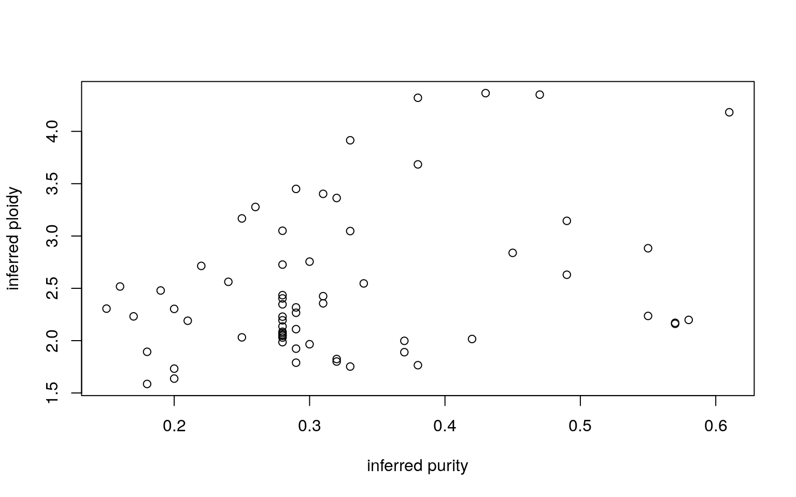

3 Data
All external dependencies and data files are summarised in the following yaml file:
| Summary of inputs | |
|---|---|
| SampleList | data/metadata/full_cohort.amendJuly2022v2_updatedJuly2025.txt |
| strelka | data/strelka/ |
| CNVkit | data/dnaseg_gentian/ |
| Mutect2 | data/mutect2/ |
| vardictGermline | data/vardictGermline/ |
| purity | data/purity/ |
| CNVkitGenes | data/cnv_genes_gentian/ |
| vardict | data/vardict/ |
| HCcaller | data/haplotypecaller/ |
| summary_metrics | data/summary_metrics |
| ManCur | data/manual_calls.xlsx |
| Annot.Bed | annot/Pituitary_panel_Version3_hg19_170301_capture_targets_Bed4.bed |
| Annot.HgChr | annot/human_chromosome_summary.txt |
| Annot.CancerCensus | annot/cancer_gene_census.v92.csv |
| Annot.CancerMutCensus | annot/cmc_export.v92.tsv |
| Annot.CancerMutCensusCache | annot/CancerMutCensus_LVL1-3.RData |
| Annot.Ens2Hugo | annot/ensembl2hugo.txt |
| Annot.TCGApathway | annot/TCGA_pan_cancer_pathway.csv |
| Annot.ACMG | annot/ACMG_v3.0.csv |
| Annot.CosmicMut | annot/CosmicResistanceMutations.tsv_v95.gz |
| Annot.SBSv3 | annot/COSMIC_v3.2_SBS_GRCh37.txt |
| Annot.SBSv3Properties | annot/COSMIC_v3.2_SBS_GRCh37_infoTable.txt |
| CompCohort.MSK | annot/MSK2020_EAConly_Mutated_Genes.txt |
| CompCohort.TCGA | annot/TCGA_2017_only_Mutated_Genes.txt |
| CompCohort.DFCI | annot/esca_broad_Mutated_Genes.txt |
| DriverMuts.PromoterFML | data/DriverMutoncodriveFML/oncoFML_promoter_070422 |
| DriverMuts.CodingFML | data/DriverMutoncodriveFML/oesoph_070411_coding_FML.gz |
| DriverMuts.SNVFML | data/DriverMutoncodriveFML/oesoph64_oncokb.SNV.maf |
| DriverMuts.MutPanning | data/DriverMutoncodriveFML/SignificanceOesophagus_mutpanning.txt |
| DriverMuts.PromoterFMLPlot | data/DriverMutoncodriveFML/2022-04-07_input-oncodrivefml-promoter.png |
| DriverMuts.CodingFMLPlot | data/DriverMutoncodriveFML/2022-04-07_input-oncodrivefml-coding.png |
| CGI.snv | data/CGI/mutation_analysis.tsv |
| CGI.cnv | data/CGI/cna_analysis.tsv |
| CGI.drug | data/CGI/drug_prescription.tsv |
| OncokbAnnotations | data/DriverMutoncodriveFML/oesoph64_oncokb.combined.maf |
| loh | data/loh/ |
| Gistic.GoodResp_amp | data/gistic/good/All_Samples_good_outcome.amp_genes.conf_90.txt |
| Gistic.GoodResp_del | data/gistic/good/All_Samples_good_outcome.del_genes.conf_90.txt |
| Gistic.PoorResp_amp | data/gistic/poor/poor_outcome_8samples.amp_genes.conf_90.txt |
| Gistic.PoorResp_del | data/gistic/poor/poor_outcome_8samples.del_genes.conf_90.txt |
| Gistic.All_amp | data/gistic/all/amp_genes.conf_90.txt |
| Gistic.All_del | data/gistic/all/del_genes.conf_90.txt |
3.1 Patient Samples
Below is a list of the samples used in this analysis and their clinical information saved in the variable SampleIDs.
Need to factor specific inputs for later survival analysis
SampleIDs <- read.delim(AllDat$SampleList, sep = "\t")
SampleIDs$Gender.Male.1..F.0 <- factor(SampleIDs$Gender.Male.1..F.0)
# SampleIDs$Cancer.Location.By.Pathologist=factor(SampleIDs$Cancer.Location.By.Pathologist)
SampleIDs$Grade <- factor(SampleIDs$Grade, levels = c("Poorly diff", "Medium", "Highly diff", "Mucinous"))
SampleIDs$Stage <- factor(SampleIDs$Stage)
SampleIDs$pT <- factor(SampleIDs$pT)
SampleIDs$pN <- factor(SampleIDs$pN)
SampleIDs$pM <- factor(SampleIDs$pM)
SampleIDs$Margin.status...R0.R2 <- factor(SampleIDs$Margin.status...R0.R2)
SampleIDs$Stage <- factor(substr(SampleIDs$AJCC_8, 1, 1))
SampleIDs$Alive[which(SampleIDs$Alive == T)] <- "Alive"
SampleIDs$Alive[which(SampleIDs$Alive == 0)] <- "Deceased"
SampleIDs$Location <- factor(SampleIDs$Cancer.Location.By.Pathologist) # SampleIDs$Cancer.Location.By.Pathologist
SampleIDs$Outcome[which(SampleIDs$Outcome == "")] <- NA
SampleIDs$Age.at.op <- as.numeric(SampleIDs$Age.at.op)
SampleIDs$OutCol <- factor(SampleIDs$Outcome)
levels(SampleIDs$OutCol) <- c("grey75", "darkcyan", "red", "forestgreen", "darkorange")There are 65 samples in this cohort.
The location of these tumors are either the cardia (near stomach, Siewert II) or distal esophagus (Siewert I), locations where EAC are more common, and these have all been classified as adenocarcinomas by pathology (EAC).
3.2 Somatic Single Nucleotide Variants
Somatic variants were either called with:
- strelka where matched normal was present to create
StTab1 - mutect2
M2Tab1 - vardict
varGTab1
########### LOAD STRELKA DATA
StFiles <- dir(AllDat$strelka)
StrelkaAll <- lapply(StFiles, function(x) read.delim(paste0(AllDat$strelka, "/", x), sep = "\t"))
namIdx <- sapply(strsplit(StFiles, "_|.maf"), function(x) x[2])
names(StrelkaAll) <- SampleIDs$SAMPLE_ID[match(namIdx, SampleIDs$SAMPLE_ID)]
meltStrelkaAll <- melt(StrelkaAll, measure.vars = "DISTANCE")
cNames <- c("CHROM", "POS", "REF", "ALT", "STRAND", "Hugo_Symbol", "cadd_phred", "HGVSp_Short", "Consequence", "Tumor_Sample_Barcode", "gn_af", "nAlt.TUMOR", "nTot.TUMOR", "VAF.TUMOR", "mgrb_af")
Tab1 <- meltStrelkaAll[, match(cNames, colnames(meltStrelkaAll))]
Tab1$gn_af <- round(Tab1$gn_af, 2)
StTab1 <- Tab1
########### LOAD MUTECT DATA
StFiles <- dir(AllDat$Mutect2)
mutect2All <- lapply(StFiles, function(x) read.delim(paste0(AllDat$Mutect2, "/", x), sep = "\t"))
namIdx <- sapply(strsplit(StFiles, "_|.maf"), function(x) x[2])
names(mutect2All) <- SampleIDs$SAMPLE_ID[match(namIdx, SampleIDs$SAMPLE_ID)]
meltmutect2All <- melt(mutect2All, measure.vars = "DISTANCE")
cNames <- c("CHROM", "POS", "REF", "ALT", "Hugo_Symbol", "cadd_phred", "HGVSp_Short", "Consequence", "gn_af", "X1k_af", "mgrb_af", "max_af", "PolyPhen", "STRAND", "nAlt.TUMOR", "nTot.TUMOR", "VAF.TUMOR", "nAlt.NORMAL", "nTot.NORMAL", "VAF.NORMAL", "Tumor_Sample_Barcode")
Tab1 <- meltmutect2All[, match(cNames, colnames(meltmutect2All))]
Tab1$gn_af <- round(Tab1$gn_af, 2)
M2Tab1 <- Tab1
########### LOAD VARDICT DATA
VDFiles <- dir(AllDat$vardict)
varAll <- lapply(VDFiles, function(x) read.delim(paste0(AllDat$vardict, "/", x), sep = "\t"))
namIdx <- sapply(strsplit(VDFiles, "_|.maf"), function(x) x[2])
names(varAll) <- SampleIDs$SAMPLE_ID[match(namIdx, SampleIDs$SAMPLE_ID)]
meltvdAll <- melt(varAll, measure.vars = "DISTANCE")
cNames <- c("CHROM", "POS", "REF", "ALT", "Hugo_Symbol", "cadd_phred", "HGVSp_Short", "Consequence", "gn_af", "X1k_af", "mgrb_af", "max_af", "PolyPhen", "STRAND", "nAlt.TUMOR", "nTot.TUMOR", "VAF.TUMOR", "nAlt.NORMAL", "nTot.NORMAL", "VAF.NORMAL", "Tumor_Sample_Barcode")
GTab1 <- meltvdAll[, match(cNames, colnames(meltvdAll))]
GTab1$gn_af <- round(GTab1$gn_af, 2)
# Filter out variants which have a gnomad frequency of greater than 75% in gnomad and mgrb
tx2 <- which(GTab1$gn_af > 0.75 | GTab1$mgrb_af > 0.75)
varGTab1 <- GTab1[-tx2, ]3.3 Germline SN Variants
Germline variants were either called with HaplotypeCaller (HCTab1) or Vardict (GTab1). Both were annotated with VEP
# Haplotype caller here
VDFiles <- dir(AllDat$HCcaller)
hcAll <- lapply(VDFiles, function(x) read.delim(paste0(AllDat$HCcaller, "/", x), sep = "\t"))
namIdx <- sapply(strsplit(VDFiles, "_|.maf"), function(x) x[7])
names(varAll) <- namIdx ## SampleIDs$SAMPLE_ID[match(namIdx, SampleIDs$SAMPLE_ID)]
melthcAll <- melt(hcAll, measure.vars = "DISTANCE")
cNames <- c("CHROM", "POS", "ID", "REF", "ALT", "Hugo_Symbol", "cadd_phred", "HGVSp_Short", "Consequence", "L1", "gn_af", "X1k_af", "mgrb_af", "max_af", "PolyPhen", "cadd_phred.1", "DOMAINS", "CLIN_SIG", "STRAND", "nAlt.NORMAL", "nTot.NORMAL", "VAF.NORMAL", "Tumor_Sample_Barcode")
HCTab1 <- melthcAll[, match(cNames, colnames(melthcAll))]
HCTab1$gn_af <- round(HCTab1$gn_af, 2)
# HCTab1$END=HCTab1$POS+mVals-1
# HCTab1$Variant_Type=ifelse(mVals==1, "SNP",ifelse(a1>a2, "DEL", "INS"))
# find the deleterious consequences?
# # enter the types of variants we want to report
# CodingVar=c("stop", "miss", "frameshift", "prime")
# delCons=unlist(sapply(CodingVar, function(x) grep(x, GTab1$Consequence)))
# Load vardict results here
VDFiles <- dir(AllDat$vardictGermline)
varAll <- lapply(VDFiles, function(x) read.delim(paste0(AllDat$vardictGermline, "/", x), sep = "\t"))
namIdx <- sapply(strsplit(VDFiles, "_|.maf"), function(x) x[2])
names(varAll) <- namIdx ## SampleIDs$SAMPLE_ID[match(namIdx, SampleIDs$SAMPLE_ID)]
meltvarAll <- melt(varAll, measure.vars = "DISTANCE")
## save this data table\
# a1=nchar(meltvarAll$REF)
# a2=nchar(meltvarAll$ALT)
# mVals=rowMaxs(cbind(a1, a2))
cNames <- c("CHROM", "POS", "ID", "REF", "ALT", "Hugo_Symbol", "cadd_phred", "HGVSp_Short", "Consequence", "L1", "gn_af", "X1k_af", "mgrb_af", "max_af", "PolyPhen", "cadd_phred", "CLIN_SIG", "STRAND", "nAlt.NORMAL", "nTot.NORMAL", "VAF.NORMAL", "Tumor_Sample_Barcode")
GTab1 <- meltvarAll[, match(cNames, colnames(meltvarAll))]
GTab1$gn_af <- round(GTab1$gn_af, 2)3.4 CNVs
Note CNVkit calls as follows: https://cnvkit.readthedocs.io/en/stable/pipeline.html#call
- Normals are combined to create a panel of normals for comparisons, but calls were conducted on a single-sample level, reported as
CNVlog2 LOH was inferred by gentian and loaded as
lohInfo
CNVfiles <- dir(AllDat$CNVkit)
CNVlog2 <- lapply(CNVfiles, function(x) read.delim(paste0(AllDat$CNVkit, "/", x), sep = "\t"))
namIdx <- sapply(strsplit(CNVfiles, "_|-gainloss.tsv"), function(x) x[1])
# t2=match(gsub("-", ".", namIdx), SampleIDs$SAMPLE_ID)
names(CNVlog2) <- SampleIDs$SAMPLE_ID[match(namIdx, sapply(strsplit(SampleIDs$SAMPLE_ID, "\\."), function(x) x[1]))]
# Add CNV calls at a gene level
pathview <- "data/cnv_genes_gentian/"
filesIn <- dir(pathview)
dnaSegGentian <- lapply(paste(pathview, filesIn, sep = ""), function(x) read.csv(x))
names(dnaSegGentian) <- sapply(dnaSegGentian, function(x) x$Sampleid[1])3.5 Estimates of purity
Purity was estimated using PureCN. Below is a plot of the inferred ploidy compared to inferred purity across the cohort in the variable pinfo
pfiles <- dir(AllDat$purity)
pinfo <- sapply(pfiles, function(x) read.csv(paste0(AllDat$purity, "/", x)))
colnames(pinfo) <- SampleIDs$SAMPLE_ID[match(unlist(strsplit(colnames(pinfo), ".csv")), sapply(strsplit(SampleIDs$SAMPLE_ID, "\\."), function(x) x[1]))]
plot(unlist(pinfo["Purity", ]), unlist(pinfo["Ploidy", ]),
ylab = "inferred ploidy", xlab = "inferred purity"
)